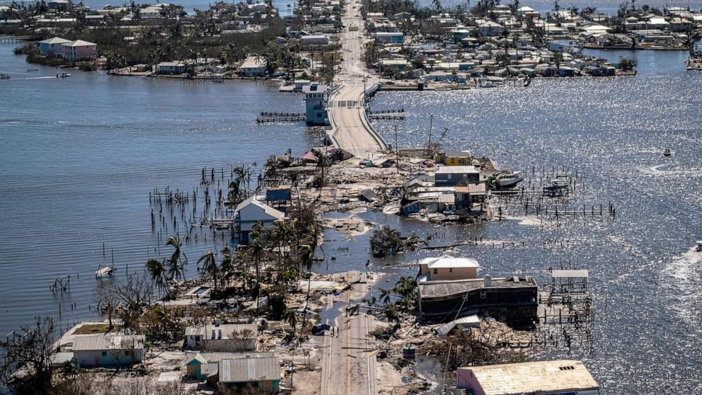
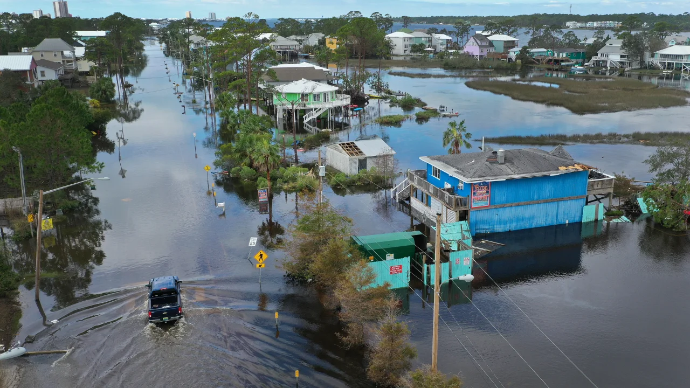
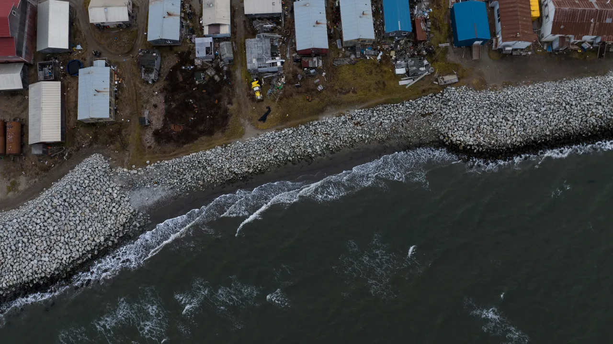
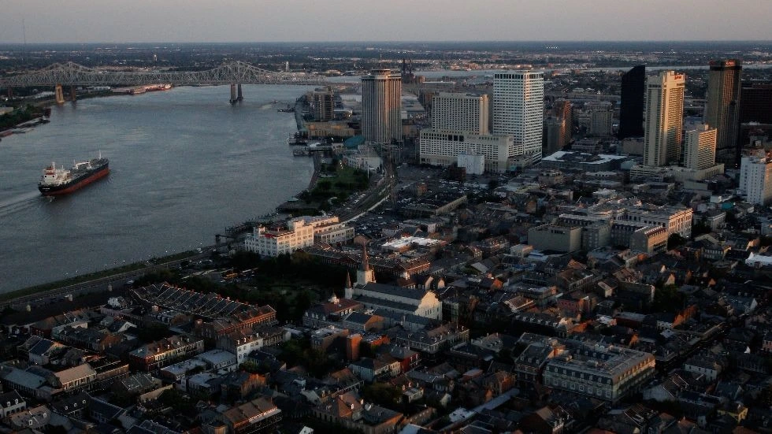

Scientists have documented an abnormal and dramatic surge in sea levels along the U.S. gulf and southeastern coastlines since about 2010, raising new questions about whether New Orleans, Miami, Houston and other coastal communities might be even more at risk from rising seas than once predicted.
The acceleration, while relatively short-lived so far, could have far-reaching consequences in an area of the United States that has seen massive development as the wetlands, mangroves and shorelines that once protected it are shrinking. An already vulnerable landscape that is home to millions of people is growing more vulnerable, more quickly, potentially putting a large swath of America at greater risk from severe storms and flooding.
The increase has already had major effects, researchers found. One study suggests that recent devastating hurricanes, including Michael in 2018 and Ian last year, were made considerably worse by a faster-rising ocean. Federal tide gauge data from the National Oceanic and Atmospheric Administration suggest that the sea level, as measured by tide gauge at Lake Pontchartrain in New Orleans, is eight inches higher than it was in 2006, just after Hurricane Katrina.
“The entire Southeast coast and the Gulf Coast is feeling the impact of the sea level rise acceleration,” said Jianjun Yin, a climate scientist at the University of Arizona and the author of one of two academic studies published in recent weeks that describe the changes.
Yin’s study, published in the Journal of Climate, calculates the rate of sea-level rise since 2010 at more than 10 millimeters — or one centimeter — per year in the region, or nearly 5 inches in total through 2022. That is more than double the global average rate of about 4.5 millimeters per year since 2010, based on satellite observations of sea level from experts at the University of Colorado at Boulder.
While the annual totals might sound minor, even small changes in sea levels over time can have destructive consequences. Yin’s study suggested that Hurricanes Michael and Ian, two of the strongest storms ever to hit the United States, were made considerably worse in part from additional sea level rise.

An aerial image shows the only access to the Matlacha neighborhood destroyed in the aftermath of Hurricane Ian in Fort Myers, Fla., on Sept. 30, 2022. (Ricardo Arduengo/AFP)
“It turns out that the water level associated with Hurricane Ian was the highest on record due to the combined effect of sea-level rise and storm surge,” Yin said.
A second study by a long list of sea-level experts, led by Sönke Dangendorf of Tulane University and published in Nature Communications, finds the same trend since 2010 across the U.S. Gulf Coast and southeastern coastlines, calling the rise “unprecedented in at least 120 years.”
"It’s a window into the future,” said Dangendorf, who collaborated with experts at multiple U.S. institutions and Britain’s National Oceanography Center. The rates are so high in recent years, Dangendorf said, that they’re similar to what would be expected at the end of the century in a very high greenhouse gas emissions scenario.

Flooding in Gulf Shores, Alabama, after Hurricane Sally in September 2020. (Jon Raedle/Getty Images)
An additional two studies on rapid sea-level rise and how it is affecting the region have been released by scientists in preprint form but have not yet passed through peer review, suggesting a swell of scientific attention on the subject.
The new findings are striking in part because the rapid rise appears to be caused by profound changes in the ocean. In parts of Texas and Louisiana, sinking land has long been a factor that contributes to sea levels growing relatively higher over time. But in the latest studies, scientists show a rapid rise of sea levels in places such as Pensacola and Cedar Key, Fla., where the land is not sinking as rapidly as it is in places such as Grand Isle, La., or Galveston, Tex.
In general, higher seas in the Gulf of Mexico and around Florida mean that hurricane risks in some of the most exposed and storm-prone parts of the United States are growing only more acute.
“If you have a hurricane now as opposed to the same hurricane 150 years ago, the impacts would be different.”
In addition, as seas rise and people continue to move to high-risk areas along the coasts, scientists say that millions of acres of U.S. land and hundreds of thousands of homes and offices could slip below swelling tide lines. Experts from the nonprofit First Street Foundation also projected recently that properties in many coastal areas could lose value as flooding intensifies, a shift that could harm homeowners and erode local tax bases.
Scientists are not entirely on the same page about the causes driving the phenomenon, or whether the recent acceleration in rising seas will continue at such a rapid clip. Researchers typically prefer to rely on decades of data to be more certain of trends in the climate system, and their causes. In that context, the recent sea-level rise has happened over a relatively short time period. That makes the trend as ambiguous as it is worrying.

Small waves crash into reinforced seawalls in Shishmaref, Alaska, Tuesday, Oct. 4, 2022. (Jae Hong/AP)
Still, this much seems clear: The rapid sea-level rise appears to start in the Gulf of Mexico, which has been warming far faster than the global ocean. Warm water naturally expands, causing sea levels to rise. That warm water also gets carried by currents out of the gulf and along the East Coast, affecting places such as Georgia and the Carolinas.
Will this trend continue? That remains less clear, scientists say.
The waters that have helped drive up sea levels in Gulf of Mexico are very warm even at deep levels, based on a preprint study by Jacob Steinberg and colleagues at the Woods Hole Oceanographic Institution, NASA’s Jet Propulsion Laboratory, the University of Hawaii at Manoa and the National Center for Atmospheric Research.
Steinberg and colleagues suggest that the trend implicates a warm current called the Loop Current, which enters the gulf from the Caribbean Sea and in turn is part of a broader pattern of circulation in the Atlantic Ocean.
The warm Loop Current is “bringing water in, not just at the surface but with depth,” Steinberg said. The current often extends hundreds of yards beneath the sea surface, Steinberg added, and will spin off warm water blobs, which scientists call “eddies,” which move across the gulf.
“In low-lying coastal regions, an increase of even a few centimeters in the background sea level can break the regional flooding thresholds and lead to coastal inundation,”
Yin also ties the change to the Loop Current and in his study goes further, describing it as an aftereffect of a major slowdown event in the overall circulation of the Atlantic Ocean that occurred in 2009-2010. If true, this would suggest that these sea level changes may be tied to a broader pattern that reflects how climate change is altering the circulation of the oceans.
Dangendorf, lead author of the Nature Communications study, isn’t convinced. While noting the same rapid sea-level rise in recent years as the other works, his study determines the cause is a combination of factors, some of them natural.
“We have this forced acceleration, but then on top we have that natural variability, and over the last couple of years we were unlucky, having that acceleration superimposed on natural variability,” Dangendorf said.

New Orleans. (Getty Images)
Nevertheless, Dangendorf said that the rapid sea-level changes are troubling, are having immediate effects, and are more like what scientists once would have expected only if the world kept pumping massive amounts of planet-heating gases into the atmosphere.
He’s not alone.
Data from NOAA show that “high tide flooding,” even on sunny days, has more than doubled throughout the Gulf Coast and Southeast coastal regions since 2000.
“It messes up your daily life. It interrupts your daily life,” said Thomas Wahl, a professor of coastal risks and engineering at the University of Central Florida, and a co-author of the paper in Nature Communications. “It corrodes infrastructure. It corrodes cars that are driving through saltwater on a daily basis. You can’t open your business or get to work.”
Then there is the fact that in low-lying regions with little elevation, even small amounts of sea-level rise can make storms that much more calamitous. Waves push closer to shore, worsening erosion. Surges push farther inland. Wetlands can erode rapidly.
“Now you have a higher base water level,” Wahl said. “If you have a hurricane now as opposed to the same hurricane 150 years ago, the impacts would be different.”
A fourth study in preprint form, by scientists with the University of Miami, NOAA, NASA and multiple institutions in the United States and Australia, finds that the major rise in sea level in the Southeast since 2010 accounts for “30-50% of flood days in 2015-2020.”
“In low-lying coastal regions, an increase of even a few centimeters in the background sea level can break the regional flooding thresholds and lead to coastal inundation,” the study notes.
The critical question, of course, is whether the current rates of change documented by researchers will continue — leading, potentially, to well over a foot of additional sea-level rise in coming decades — or if they will return to levels more in line with global averages.
Based on sea-level records from Pensacola and Galveston, which date back a century or longer, the Gulf Coast also saw a rapid rise in sea level in the 1940s, a trend that had subsided by the 1950s. But it is not yet clear if this event will prove similar.
Overall, the pace of sea-level rise is accelerating globally, and scientists have been unequivocal that seas will continue to rise well into the future, even if humans manage to drastically cut greenhouse gas emissions.
In a report last year, NOAA and other federal agencies found U.S. coastlines on average are projected to face an additional foot of rising seas over the next three decades. The report gave particularly high projections for the Gulf Coast, in significant part because of recent trends. Earlier this year, new research documented how the amount of excess heat buried in the planet’s oceans, a strong marker of climate change, had again reached a record high in 2022.
In the same report, NOAA found that if sea-level rise along the eastern part of the Gulf Coast continues on its recent trajectory, it would rival a high-end sea level forecast for the year 2050. NASA recently released a sea-level tool that includes similar findings, showing seas rising at a rate that exceeds even the high-end forecasts at sites such as Pensacola, Fla., and Dauphin Island, Ala.
Despite the ongoing scientific debate regarding the cause of the current sea-level surge in the Gulf of Mexico and in the U.S. Southeast, the tangible effects it imposes on communities are likely to mount.
“It’s very difficult for me to say what’s going to happen in the near term,” said Ben Hamlington, a NASA sea-level expert and a co-author on Steinberg’s study. “It’s not like these rates are immediately going to turn around.”